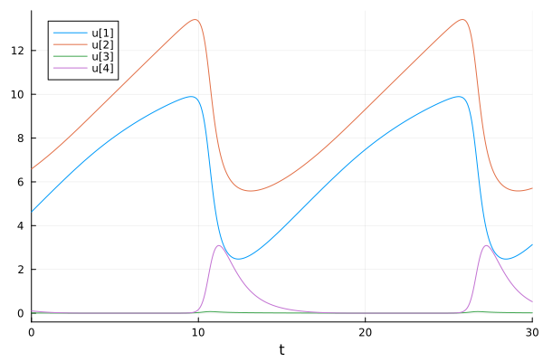
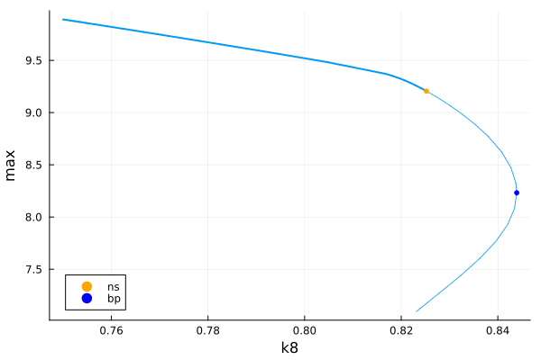
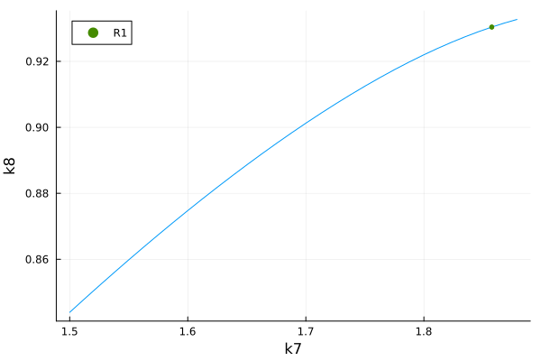
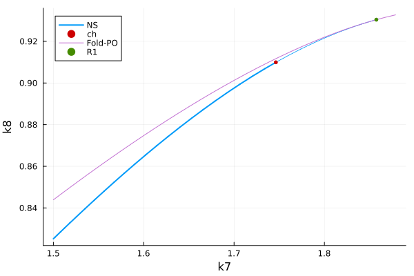
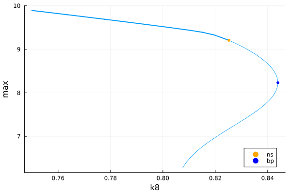
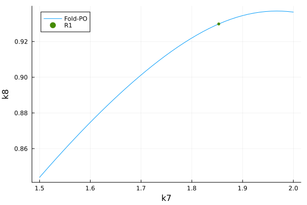
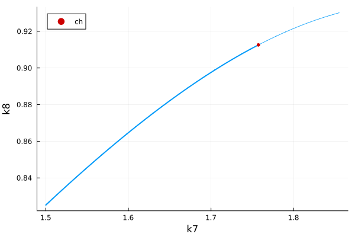
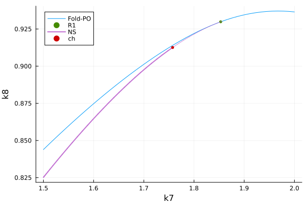

🟠 Steinmetz-Larter model
This example is found in the MatCont ecosystem.
The Steinmetz-Larter model is studied in the MatCont ecosystem because it is a simple example where a Chenciner bifurcation occurs. The article [della_rossa] reports the bifurcation point:
\[(k_7,k_8)\approx (1.757356,0.9125773)\]
The equations are as follows:
\[\tag{E}\left\{\begin{array}{l} \dot{A}=-k_1 A B X-k_3 A B Y+k_7-k_{-7} A, \\ \dot{B}=-k_1 A B X-k_3 A B Y+k_8, \\ \dot{X}=k_1 A B X-2 k_2 X^2+2 k_3 A B Y-k_4 X+k_6, \\ \dot{Y}=-k_3 A B Y+2 k_2 X^2-k_5 Y, \end{array}\right.\]
This tutorial is also useful in that we show how to start periodic orbits continuation from solutions obtained from solving ODEs. Being a relatively advanced tutorial, we do not give too many details.
We start by coding the bifurcation problem.
using Revise, Plotsimport BifurcationKit as BKimport BifurcationKit: @optic, @reset, norminffunction SL!(du, u, p, t = 0) (;k1, k2, k3, k4, k5, k6, k7, k₋₇, k8) = p A,B,X,Y = u du[1] = -k1*A*B*X - k3*A*B*Y + k7 - k₋₇*A du[2] = -k1*A*B*X - k3*A*B*Y + k8 du[3] = k1*A*B*X - 2*k2*X^2 + 2*k3*A*B*Y - k4*X+k6 du[4] = -k3*A*B*Y + 2*k2*X^2 - k5*Y duendz0 = rand(4)par_sl = (k1=0.1631021, k2=1250., k3=0.046875, k4=20., k5=1.104, k6=0.001, k₋₇=0.1175, k7=1.5, k8=0.75)bifprob = BK.ODEBifProblem(SL!, z0, par_sl, (@optic _.k8);)# record variables for plottingfunction recordFromSolution(x, p; iter, state, k...) xtt = BK.get_periodic_orbit(p.prob, x, BK.getparams(iter, state)) mi, ma = @views extrema(xtt[1, :]) return (max = ma, min = mi, amplitude = ma - mi, period = BK.getperiod(p.prob, x, BK.getparams(iter, state)))end# plotting functionfunction plotSolution(x, p; iter, state, k...) xtt = BK.get_periodic_orbit(p.prob, x, BK.getparams(iter, state)) plot!(xtt.t, xtt.u[1:4,:]'; label = "", k...)end# group parametersargspo = ( record_from_solution = recordFromSolution, plot_solution = plotSolution, normC = norminf)We obtain some trajectories as seeds for computing periodic orbits.
import OrdinaryDiffEq as ODEalg_ode = ODE.Vern9()prob_de = ODE.ODEProblem(SL!, z0, (0, 136.), par_sl)sol_ode = ODE.solve(prob_de, alg_ode)prob_de = ODE.ODEProblem(SL!, sol_ode.u[end], (0, 30.), sol_ode.prob.p, reltol = 1e-11, abstol = 1e-13)sol_ode = ODE.solve(prob_de, alg_ode)plot(sol_ode)
Computation with Shooting
We generate a shooting problem from the computed trajectories and continue the periodic orbits as function of $k_8$
probsh, cish = BK.generate_ci_problem( BK.Shooting(M = 15; jacobian = BK.AutoDiffDenseAnalytical() ), deepcopy(bifprob), prob_de, sol_ode, 16.; reltol = 1e-10, abstol = 1e-12, parallel = true)opts_po_cont = BK.ContinuationPar(p_min = 0., p_max = 20.0, ds = 0.002, n_inversion = 6, nev = 4, max_steps = 40, tol_stability = 1e-3, newton_options = BK.NewtonPar(max_iterations = 10))br_sh = BK.continuation(deepcopy(probsh), cish, BK.PALC(tangent = BK.Bordered()), opts_po_cont; # verbosity = 3, plot = true, callback_newton = BK.cbMaxNorm(10), argspo... )scene = plot(br_sh)
Curve of Fold points of periodic orbits
opts_posh_fold = BK.ContinuationPar(br_sh.contparams, detect_bifurcation = 3, max_steps = 35, p_max = 1.9, plot_every_step = 10, dsmax = 4e-2, ds = 1e-2)@reset opts_posh_fold.newton_options.tol = 1e-12fold_po_sh = BK.continuation(deepcopy(br_sh), 2, (@optic _.k7), opts_posh_fold; # verbosity = 2, plot = true, alg = BK.PALC(), detect_codim2_bifurcation = 0, start_with_eigen = false, usehessian = true, jacobian_ma = BK.MinAug(), normC = norminf, callback_newton = BK.cbMaxNorm(1e1), ) ┌─ Curve type: FoldPeriodicOrbitCont
├─ Number of points: 36
├─ Type of vectors: BorderedArray{Vector{Float64}, Float64}
├─ Parameters (:k8, :k7)
├─ Parameter k7 starts at 1.5, ends at 1.878787770891178
├─ Algo: PALC [Secant]
└─ Special points:
- # 1, R1 at k7 ≈ +1.85749132 ∈ (+1.85748866, +1.85749132), |δp|=3e-06, [converged], δ = (-1, 0), step = 33
- # 2, endpoint at k7 ≈ +1.88902290, step = 36
plot(fold_po_sh)
Curve of NS points of periodic orbits
opts_posh_ns = BK.ContinuationPar(br_sh.contparams, detect_bifurcation = 0, max_steps = 35, p_max = 1.9, plot_every_step = 10, dsmax = 5e-2, ds = 1e-2)@reset opts_posh_ns.newton_options.tol = 1e-11ns_po_sh = BK.continuation(deepcopy(br_sh), 1, (@optic _.k7), opts_posh_ns; # verbosity = 2, # plot = true, detect_codim2_bifurcation = 2, # update_minaug_every_step = 1, jacobian_ma = BK.MinAug(), normC = norminf, callback_newton = BK.cbMaxNorm(1e1), ) ┌─ Curve type: NSPeriodicOrbitCont
├─ Number of points: 35
├─ Type of vectors: BorderedArray{Vector{Float64}, Vector{Float64}}
├─ Parameters (:k8, :k7)
├─ Parameter k7 starts at 1.5, ends at 1.860441744722986
├─ Algo: PALC [Bordered]
└─ Special points:
- # 1, ch at k7 ≈ +1.74621561 ∈ (+1.74621477, +1.74621561), |δp|=8e-07, [converged], δ = ( 0, 0), step = 24
- # 2, endpoint at k7 ≈ +1.86044174, step = 34
BK.get_normal_form(ns_po_sh, 1)ChencinerPO bifurcation point of periodic orbit
├─ (:k8, :k7) ≈ (0.909915140029816, 1.7462156131203017)
├─ Period = 14.337217854676856
└─ Problem : PeriodicOrbitFunctionalSh
scene = plot(ns_po_sh, vars = (:k7, :k8), branchlabel = "NS")plot!(scene, fold_po_sh, branchlabel = "Fold-PO")scene
Computation with collocation
probcoll, cicoll = BK.generate_ci_problem( BK.Collocation(50, 4), deepcopy(bifprob), sol_ode, 16.)opts_po_cont = BK.ContinuationPar(p_min = 0., p_max = 2.0, ds = 0.002, dsmax = 0.05, n_inversion = 6, nev = 4, max_steps = 50, detect_bifurcation = 3, tol_stability = 1e-5)br_coll = @time BK.continuation(deepcopy(probcoll), copy(cicoll), BK.PALC(), opts_po_cont; argspo..., callback_newton = BK.cbMaxNorm(1e1), )scene = plot(br_coll)
Curve of Fold points of periodic orbits
opts_pocl_fold = BK.ContinuationPar(br_coll.contparams, detect_bifurcation = 0, plot_every_step = 10, dsmax = 4e-2, max_steps = 100, ds = 0.01)@reset opts_pocl_fold.newton_options.tol = 1e-11fold_po_cl = BK.continuation(deepcopy(br_coll), 2, (@optic _.k7), opts_pocl_fold; # verbosity = 3, # plot = true, detect_codim2_bifurcation = 2, usehessian = true, jacobian_ma = BK.MinAug(), normC = norminf, callback_newton = BK.cbMaxNorm(1e1), )plot(fold_po_cl, branchlabel = "Fold-PO")
Curve of NS points of periodic orbits
opts_pocl_ns = BK.ContinuationPar(br_coll.contparams, detect_bifurcation = 1, dsmax = 4e-2, max_steps = 40)ns_po_cl = BK.continuation(deepcopy(br_coll), 1, (@optic _.k7), opts_pocl_ns; # verbosity = 3, plot = true, detect_codim2_bifurcation = 2, jacobian_ma = BK.MinAugMatrixBased(), normC = norminf, callback_newton = BK.cbMaxNorm(1e1), ) ┌─ Curve type: NSPeriodicOrbitCont
├─ Number of points: 41
├─ Type of vectors: Vector{Float64}
├─ Parameters (:k8, :k7)
├─ Parameter k7 starts at 1.5, ends at 1.8551963819656878
├─ Algo: PALC [Secant]
└─ Special points:
- # 1, ch at k7 ≈ +1.75736006 ∈ (+1.75735939, +1.75736006), |δp|=7e-07, [converged], δ = ( 0, 0), step = 31
- # 2, endpoint at k7 ≈ +1.85652932, step = 41
BK.get_normal_form(ns_po_cl, 1)ChencinerPO bifurcation point of periodic orbit
├─ (:k8, :k7) ≈ (0.9125782042272057, 1.7573600555190314)
├─ Period = 14.30411416184176
└─ Problem : PeriodicOrbitFunctionalColl
scene = plot(ns_po_cl; vars = (:k7, :k8))
scene = plot(fold_po_cl, branchlabel = "Fold-PO")plot!(ns_po_cl; vars = (:k7, :k8), branchlabel = "NS")scene
References
- della_rossa
Della Rossa, Fabio, Virginie De Witte, Willy Govaerts, and Yuri A. Kuznetsov. 2011. “Numerical Periodic Normalization for Codim 2 Bifurcations of Limit Cycles.” arXiv:1111.4445 [math]. https://doi.org/10.48550/arXiv.1111.4445.